Exercise: Topic modeling¶
With the Toolbox¶
In this section I will outline a method for applying topic modeling against Homer’s Iliad and Odyssey. I have found this method works very well for just about any study carrel.
Topic modeling is an unsupervised machine learning process. It is used to enumerate latent themes in a corpus, and it is a very good way to describe what a corpus is about. But the student, researcher, or scholar must keep in mind that there is no one correct answer to questions regarding aboutness. For example, answer me this, “How many things are Shakespeare’s writings about, and what are they?” That said, topic modeling is a useful exercise because it can be used to illustrate the ebb & flow of ideas over time or how different authors’ writings compare & contrast.
To begin, download the homer study carrel:
rdr download homer
Use the info command to get an idea of the carrel’s extent. Notice how the carrel is about 270,000 words long. The bigger the carrel, the more time must be spent computing topic models:
rdr info homer
Next, cluster the corpus to get an idea of how many large-scale themes may exist in the corpus. The result of this process informs the topic modeling process:
rdr cluster homer
Notice how the corpus falls into two gross themes, but we don’t know what those themes may be:
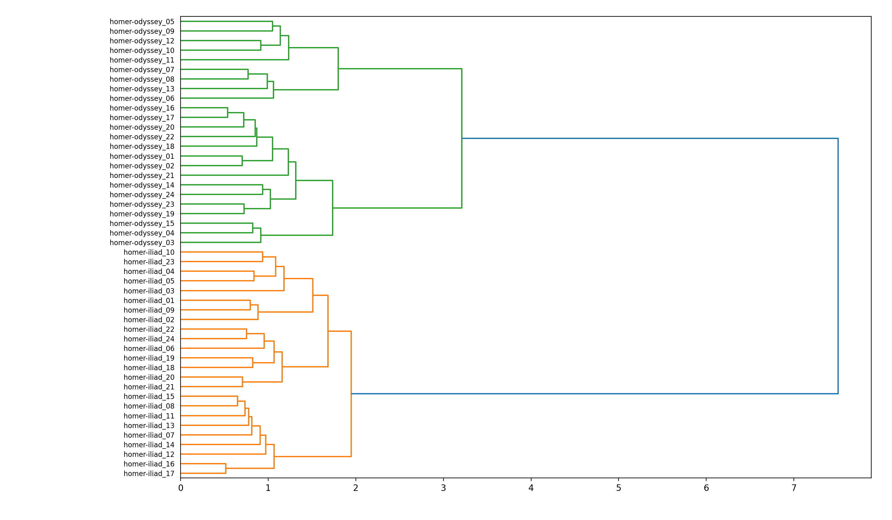Ask yourself, “If I were to describe Homer’s works in a single word, then what would that word be?” To answer the question, model Homer using a single topic and a single word:
rdr tm homer -t 1 -w 1
Apparently Homer’s works are about “man”:
labels weights features
man 5.83955 man
Now ask yourself, “How can that single topic be elaborated upon?” To answer the question, model Homer with a single topic and four words:
rdr tm homer -t 1 -w 4
Apparently Homer has something to do with the topic man-ulysses-men-jove, and the topic can be labeled with the word “man”:
labels weights features
man 5.83955 man ulysses men jove
“Okay,” you say do yourself, “But if I were divide Homer into two topics and each where elaborated upon with four words, then what might those topics be?” Try this:
rdr tm homer -t 2 -w 4
The answer to your question is “ulysses”, and “trojans”, but just as importantly, take note of the words used to elaborate on these topics:
labels weights features
ulysses 0.46761 ulysses man men tell
trojans 0.38471 trojans achaeans hector ships
Now is a good time to visualize this result. Given the whole corpus has been divided into two themes, and each theme has a weight, then what proportion of the whole is assigned to each theme? Pie charts are an easy way to visualize these relationships. To create a pie chart from the model, give this a go:
rdr tm homer -p read -o chart
We can literally see that about half of Homer is about “ulysses” and half of Homer is about “trojans”. And notice also how the pie chart’s ratios are very similar to the ratios output by the cluster process:
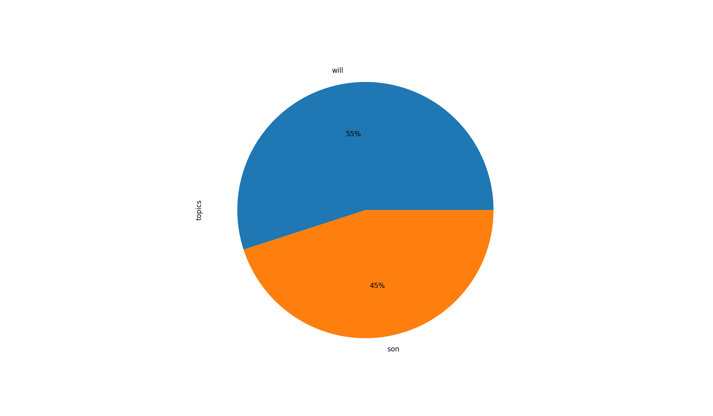Since the underlying files in this study carrel are named sequentially, it is possible to enhance the underlying topic model with file names, pivot the model, and illustrate how our two themes ebb and flow of the course of the Homer’s stories:
rdr tm homer -p read -o chart -y line -f title
From the results we can see that the two themes are distinctive between the two underlying works. One broadly describes the Trojan War, and the other broadly describes Ulysses return home:
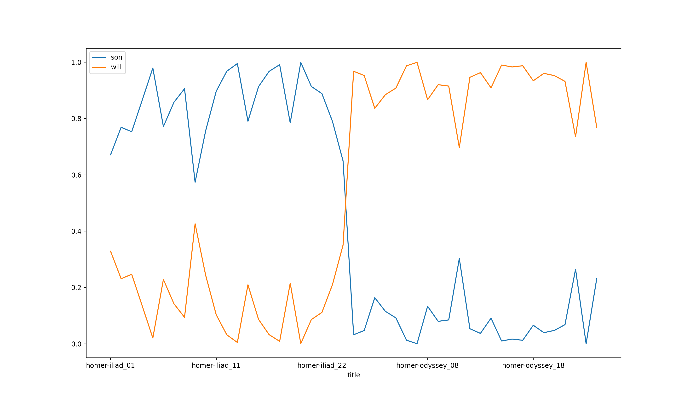Modeling Homer with a larger number of topics elaborates on what we have already seen, but since we are requesting a greater number of facets, it behooves us to significantly increase the number of times the underlying calculations are performed:
rdr tm homer -t 8 -w 8 -i 9600
rdr tm homer -p read -o chart
rdr tm homer -p read -o chart -y line -f title
Given there are forty-eight books in the whole of Homer, it might behoove the student, researcher, or scholar to model the corpus on an even larger number of topics, many words, denote an obscene number of iterations, and visualize the result:
rdr tm homer -t 24 -w 24 -i 25600
rdr tm homer -p read -o chart
rdr tm homer -p read -o chart -y line -f title
Topic modeling, like all modeling processes, is iterative in nature. Like all modeling proceses, start out small, visualize often, and grow your model. The problem to solve is not so much articulating truth. Instead, it is about making observations and telling a compelling story.
With Topic Modeling Tool¶
Topic Modeling Tool is a GUI version of MALLET, and MALLET is the grand-daddy of topic modeling applications. If you know where your study carrels are saved on your file system, then the use of Topic Modeling Tool is a good example of how study carrel data can be used by many other applications.
Let’s do a bit of topic modeling with Topic Modeling Tool. Begin by downloading the Tool and launching it.
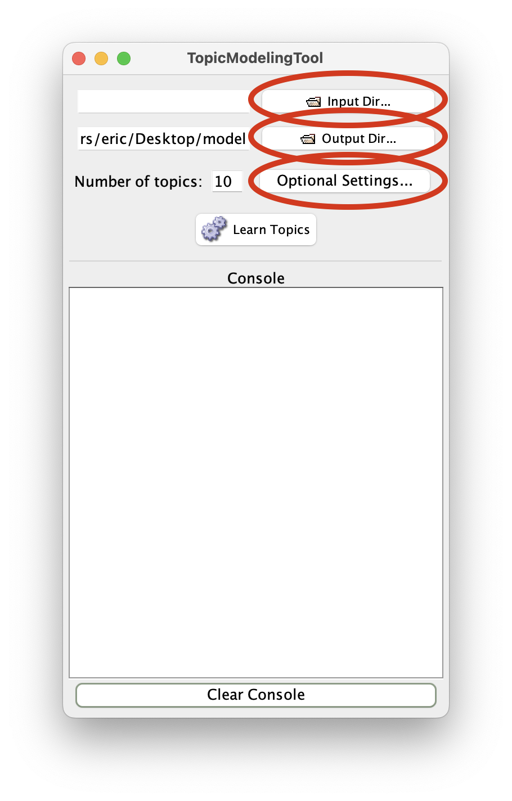Once you get that far, open up your terminal and enter the following command which will tell you were your study carrels are saved on your computer:
rdr get
Using the output of the previous command, use Topic Modeling Tool’s “Input Dir…” button to select the txt directory of your homer study carrel:
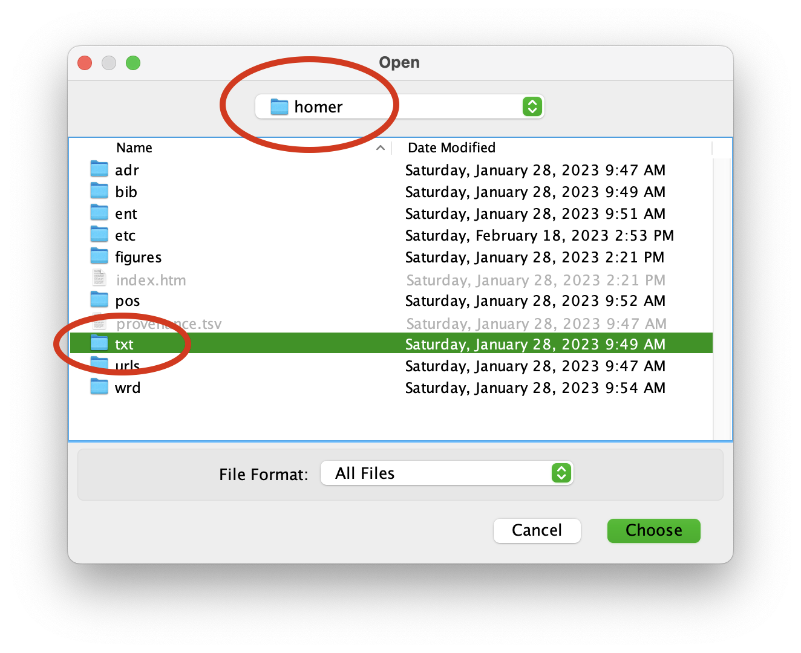You now need to denote where the Tool’s output will go. For the sake of this execise, create a folder on your Desktop and call it “model”. Like above, use the Tool’s “Output Dir…” button to navigate your file system and select the newly created model directory. Additionally, donote a stop word list by clicking the “Optional Settings…” button, clicking “Stopword File…” from the resulting window, and selecting the file named “stopwords.txt” from your study carrel’s etc directory:
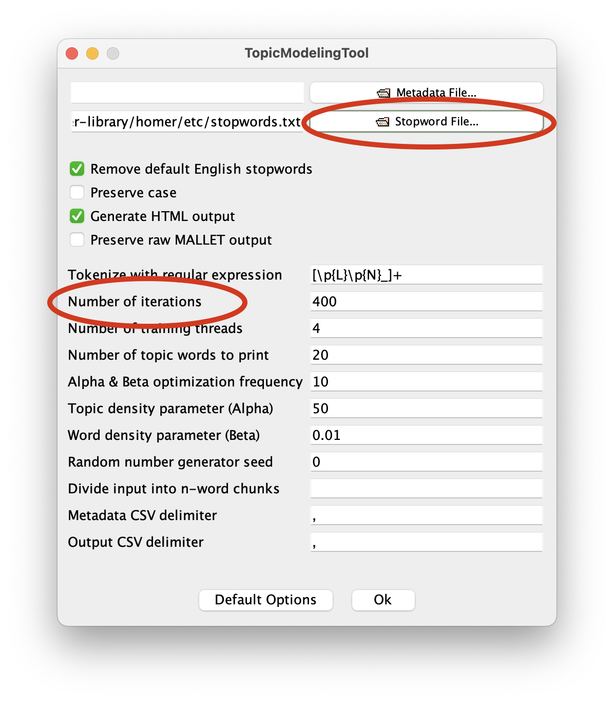 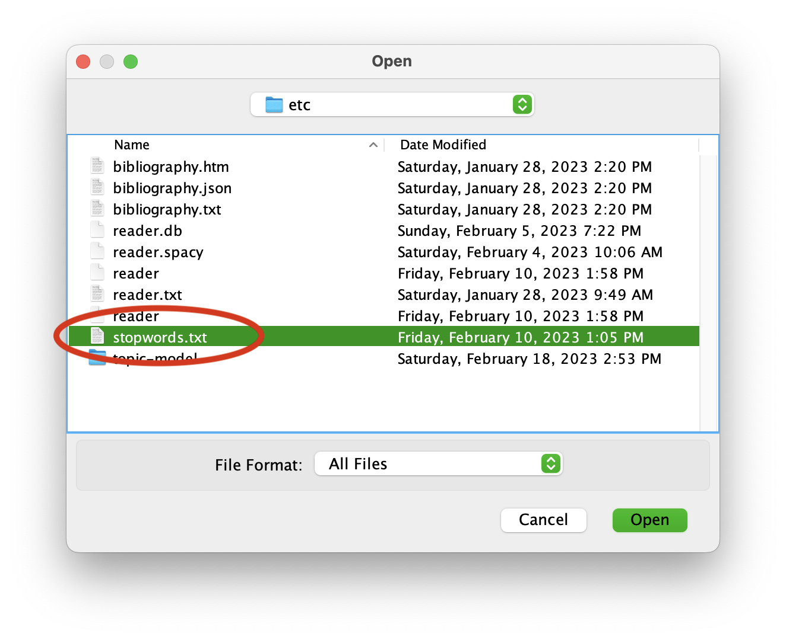After you have selected your stop words file, clock “Ok” to return to the main window.
Like before, you want grow your model slowly. Consequently, denote the number of topics to 1 and click the “Learn Topics” button. When the modeling process is done, the Tool answered the question, “If there was on overarching theme in this text, and if the theme were elaborated upon using twenty words, then what would that theme be”. The result ought to look something like this:
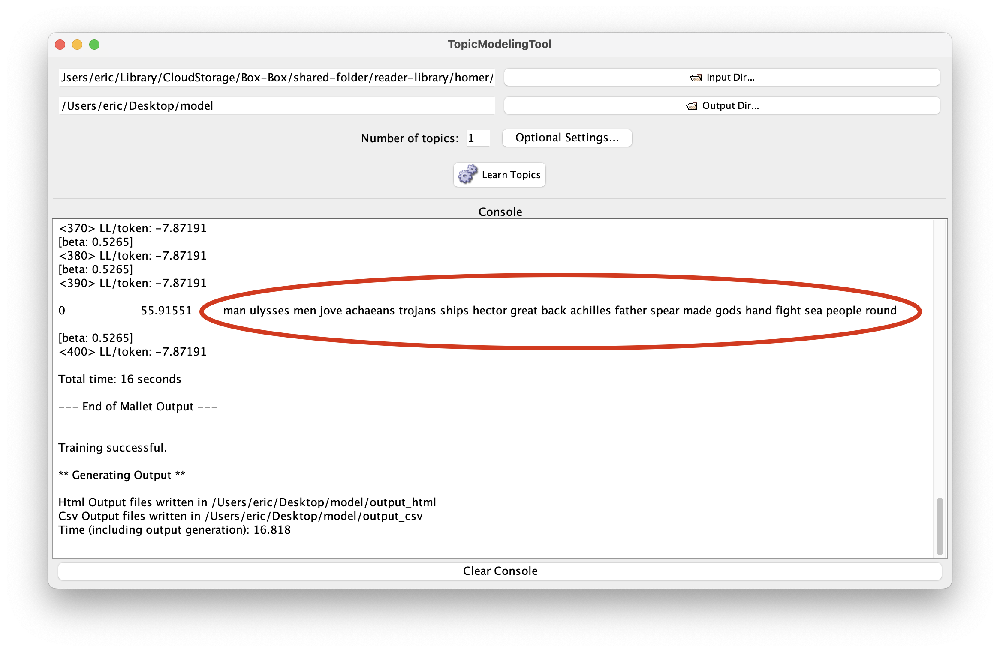Repeat the previous step three or four times, and remember to double the value of number of topics. Also consider increasing the number of iterations from the “Optional Settings…” pane. Beause of the number of words in the study carrel (about 275,000) a value of 2400 is the minumum you ought to use. The results of the modeling process should to be very similar to the results outut by the Reader. For example, with eight topics:
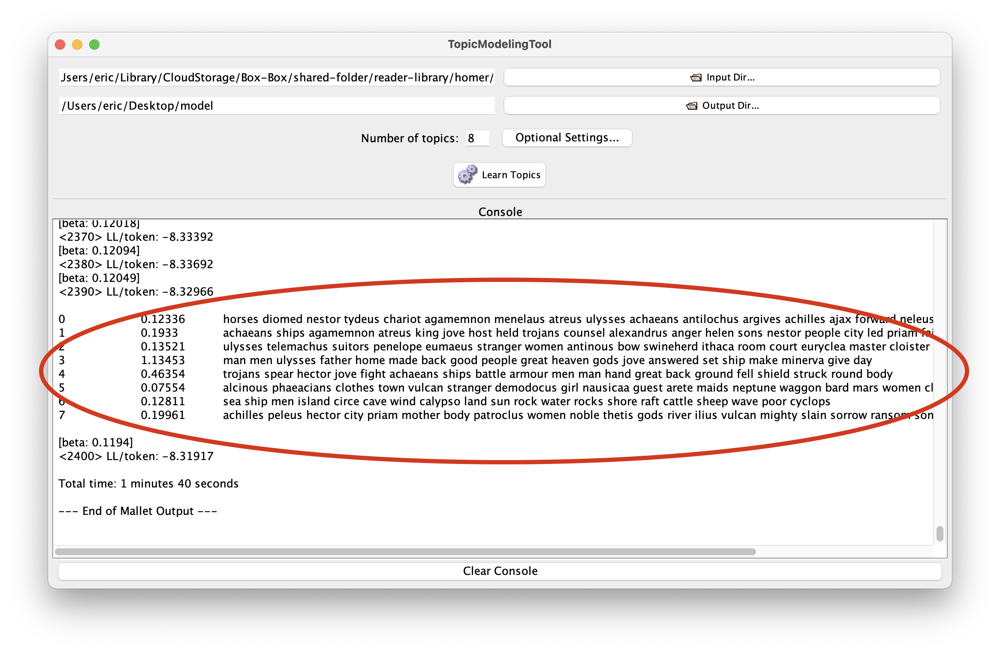The result of the Tool’s work is saved in the model directory you created previously. More specifically, the directory contains some comma-separated value (CSV) files as well as some HTML files. Open the model directory. Open the output_html directory, and open the file named “all_topics.html”. The result is a Web page listing the topics, and select the topic about “man”. Finally, you will see what files are most about “man”.
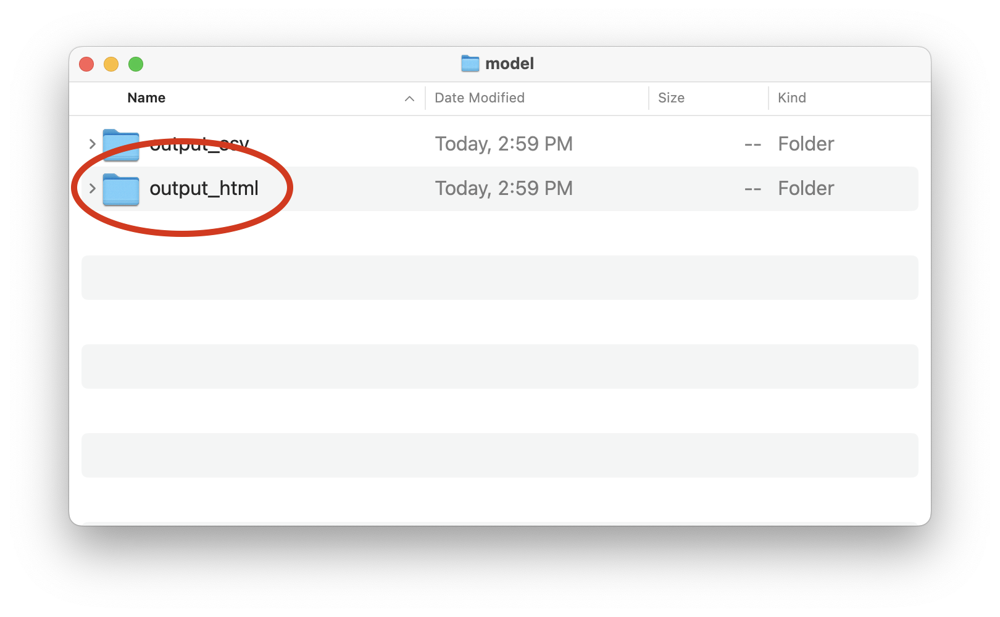 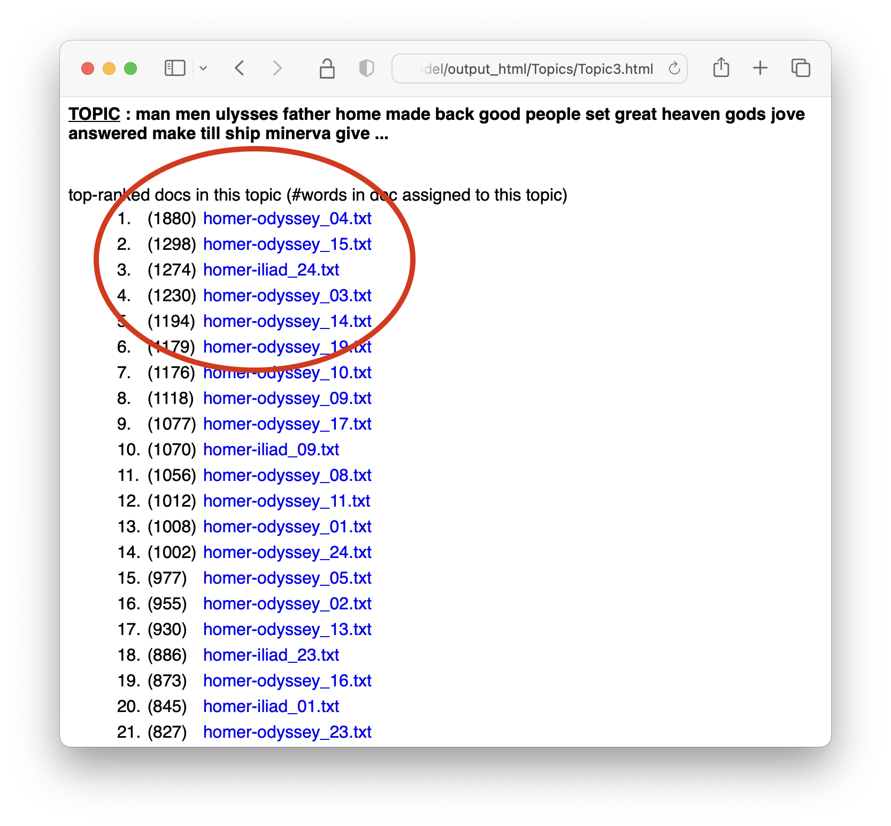
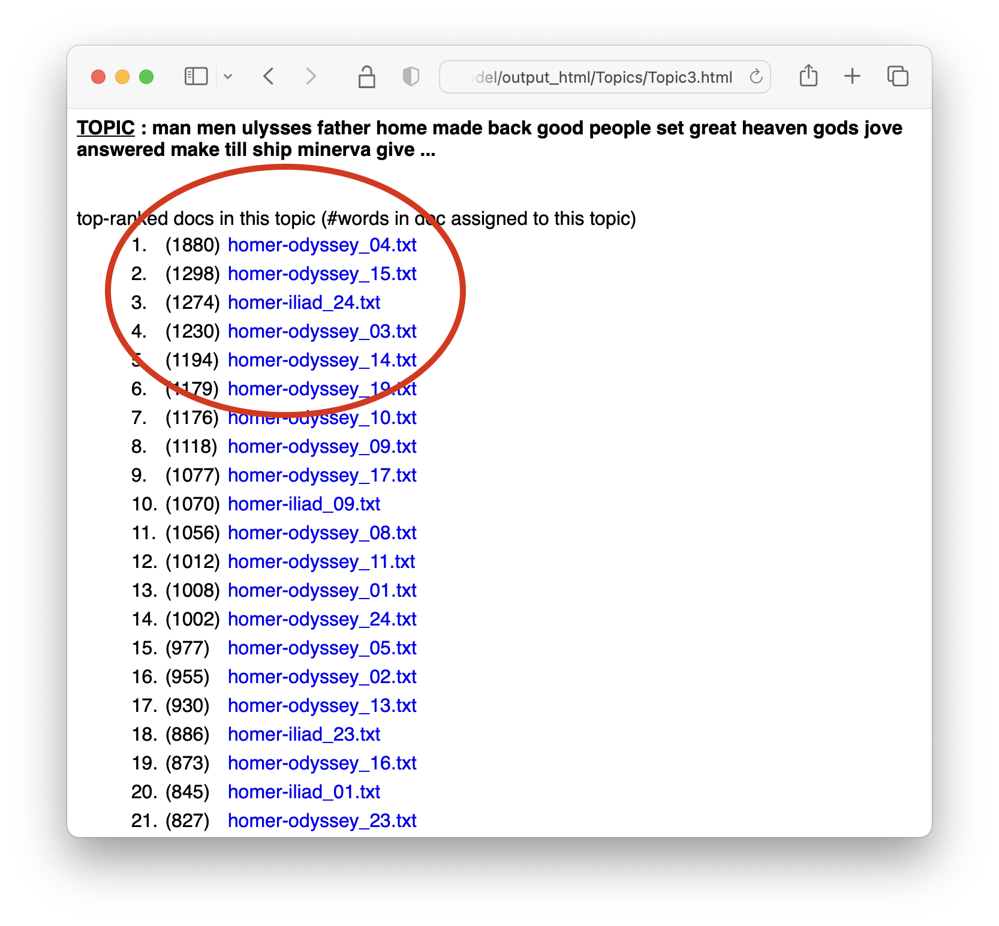
While beyond the scope of this documenation, the model’s “output_csv” directory contains tabular data that can be used to create visualizations. Used in combination with the Tool’s “Metadata File” option, this tabular data can be enhanced, pivoted, and visualized to answer questions like, “How do themes ebb and flow over time?” or “How can the themes of different authors in the same carrel be compared and contrasted?”
In summary, Topic Modeling Tool is a GUI interface for topic modeling. Its functionality is similar to the Toolbox’s functionality. Both have their own set of advantages and disadvantages.